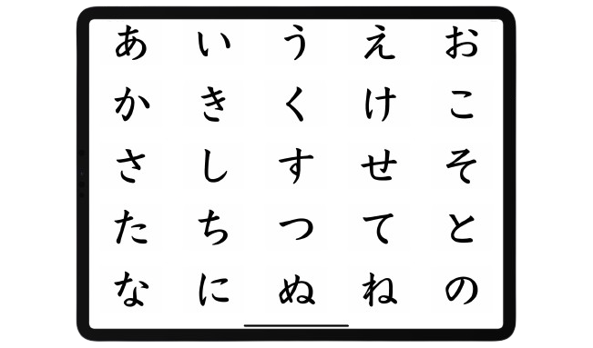

Để học Tiếng Nhật¶
Nếu bạn không cần đọc phần mở đầu, hãy đến luôn phần 2.1 Cách để học Tiếng Nhật.
1.1 Nhiều người học Tiếng Nhật "thất bại" là do đâu?¶
Có một số lượng không nhỏ những người bắt đầu học Tiếng Nhật để có thể trải nghiệm nội dung bằng Tiếng Nhật hoặc để có thể nói Tiếng Nhật trôi chảy và một số các mục tiêu khác. Tuy nhiên, cũng không ít người dù sau nhiều năm học tập vẫn không thể đạt được mục tiêu. Do học một ngôn ngữ quá khó? Hay do chưa đủ chăm?
Có lẽ vấn đề không phải nằm ở họ, mà là ở phương pháp. Trong việc học ngôn ngữ, phương pháp học của bạn tạo ra sự khác biệt rất lớn trong khả năng tiến bộ.
Thực ra, khó có thể đạt được những mục tiêu như vậy chỉ với các phương pháp học Tiếng Nhật "truyền thống". Nhiều người thất bại là vì họ đã thiếu vào một phần quan trọng trong quá trình học tập: Immersion. Immersion để chỉ việc nghe hoặc đọc nội dung ở ngôn ngữ mục tiêu của bạn, được làm bởi người bản ngữ và dành cho người bản ngữ. Ví dụ: Anime vốn là Tiếng Nhật không có phụ đề nên khi xem Anime theo cách này (Không sử dụng phụ đề), thì đó được coi là Immersion.
1.2 Vấn đề với phương pháp truyền thống¶

Học Tiếng Nhật theo phương pháp học "truyền thống" thì nó thường sẽ kiểu như này:
- Học bảng chữ cái.
- Học các câu cơ bản như câu chào hỏi, tự giới thiệu.
- Học cấu trúc ngữ pháp và từ vựng cơ bản.
- Nghĩ ra câu bằng cách trò chuyện với giáo viên hoặc bạn học hoặc bằng cách viết.
- Dịch các câu ví dụ từ tiếng mẹ đẻ sang ngôn ngữ đích (TL - Target Language, ở đây là Tiếng Nhật) và ngược lại.
- Tra cứu thêm tài liệu về cấu trúc ngữ pháp và từ vựng trong sách giáo khoa hoặc xem video YouTube
- Thực hành hội thoại sử dụng kiến thức đã học.
- Tích lũy thêm nhiều cấu trúc từ vựng và ngữ pháp và lấy chúng làm thước đo cho sự tiến bộ của bản thân
- Và cuối cùng là đến giai đoạn cuối, chuyển đến sống hoặc đi du lịch Nhật Bản với hy vọng có cơ hội rèn luyện kỹ năng của mình.
Bản thân những điều này không có gì là xấu, thực tế việc học như vậy là ổn, nhưng chưa đủ để giúp bạn đạt được trình độ cao. Vấn đề là những người học thuộc nhóm trên không thực sự tương tác với ngôn ngữ thực - nghĩa là gì?
Hãy lấy việc học bơi làm ví dụ. Bạn không thể chỉ ở trong bể bơi trẻ em với phao nổi và dành thời gian để trở thành trùm bể bơi trẻ em trước khi thử bơi trong bể bơi thật. Điều này sẽ không giúp bạn trở thành người bơi lội giỏi. Bạn cũng không nên mong rằng bạn có thể trở thành một vận động viên bơi lội giỏi chỉ bằng cách học lý thuyết đằng sau các kỹ thuật bơi một cách riêng biệt và thực hành chúng mà không thực sự bơi ở trong một bể bơi.
Hãy lấy một ví dụ có vẻ liên quan hơn: game cạnh tranh (competitive video games). Sẽ khó để có thể chơi tốt hơn nếu chỉ chơi với AI và luyện tập cả ngày. Phải đấu với những người khác ngay cả khi mình biết mình sẽ thua. Đây mới chính là chơi game thực vô điều kiện ("playing the real game", with no strings attached.)
Một sai lầm thường thấy ở nhiều người học là sử dụng tài liệu học quá lâu.
Họ muốn chắc chắn rằng mình phải biết rất rõ phần kiến thức đấy. Họ không muốn immerse vì chưa cảm thấy thoải mái, "sẵn sàng". Tuy nhiên, cần ngừng sử dụng tài liệu cho người mới bắt đầu càng sớm càng tốt vì trên thực tế, bạn sẽ không bao giờ cảm thấy sẵn sàng nếu không bắt đầu tiếp xúc với ngôn ngữ thực tế và làm quen với nó.
Chủ nghĩa cầu toàn có thể là con dao hai lưỡi trong việc học ngôn ngữ. Tốn quá nhiều thời gian và công sức mà không đạt được nhiều kết quả, cố ghi nhớ từng chi tiết nhỏ nhất của những thứ không thực sự quan trọng trong cả quá trình học dài.
Học một ngôn ngữ cũng giống như leo lên một ngọn núi. Ta hoàn toàn có thể leo núi mà không cần dụng cụ hỗ trợ dù sẽ phải rất vất vả và cần nhiều kiên trì với nỗ lực. Học theo cách "truyền thống" chẳng khác gì làm dây thừng để leo núi dễ hơn, nhưng chỉ làm dây thừng thì vẫn chưa hoàn thành việc leo núi. Cuối cùng thì vẫn sẽ phải leo lên nó, bởi vì dù có thêm bao nhiêu dây để leo núi thì việc thực hiện vẫn sẽ tốn nhiều thời gian và công sức.
1.3 Quy mô của ngôn ngữ¶
Ngôn ngữ thực sự quá rộng lớn. Có quá nhiều thứ vượt xa ranh giới trong một lớp học hoặc phương pháp dạy theo kiểu "x có nghĩa là y" (A is B) hoặc "x thực hiện hành động y" (A does B). Để thành thạo một ngôn ngữ ở cấp độ cao cần một lượng lớn "đọc" và "nghe" nội dung ngôn ngữ đích.
Không dễ để hiểu tại sao họ lại dùng từ đó trong ngữ cảnh này, hoặc từ này thay vì từ kia. Điều này tạo ra một rào cản rất lớn, vì không thể chỉ học ngữ pháp và từ vựng mà có thể đạt được trình độ như người bản ngữ.
Nếu không có những trải nghiệm cần thiết, việc cố gắng tự tạo câu ở ngôn ngữ mục tiêu thường khiến cho cách diễn đạt trở lên thiếu tự nhiên hoặc khó hiểu. Thêm nữa, việc không hiểu hoặc chưa hiểu rõ cách người bản ngữ sử dụng ngôn ngữ của họ khiến việc hiểu họ trở nên khó khăn hơn rất nhiều do không quen với cách diễn đạt bên ngoài phạm vi của tài liệu học tập.
Đây là lý do tại sao trong việc học ngoại ngữ cần có "Immersion" - đọc và nghe những gì người bản ngữ viết và nói.
Học ngôn ngữ là một quá trình ghi nhớ các thành phần trong vô thức thông qua Comprehensible Input. Điều này có nghĩa là, khi bạn hiểu điều gì đó (comprehensible) trong quá trình Immersion, bộ não của bạn sẽ vô thức lưu mẫu (pattern) đó vào để có thể sử dụng trong tương lai. Việc bạn có thể đọc hướng dẫn này một cách không hề khó khăn nhờ vào việc bạn đã có rất nhiều kinh nghiệm đọc Tiếng Anh trước đây (Bài viết gốc viết bằng Tiếng Anh) nên khi đọc hướng dẫn này, bộ não sẽ kiểu "Ê mày, có mẫu số 234 được sử dụng với mẫu số 82 và mẫu số 10 kìa".
Và vì bạn đã có thể đọc Tiếng Anh thành thạo nên đọc được hướng dẫn này không hề khó khăn với bạn. Bạn có thể hiểu các từ trong những câu này. Bạn có thể hiểu những gì liên kết các câu lại với nhau. Bạn thậm chí có thể hiểu thêm về tông giọng và mức độ trang trọng (formal) trong bài viết này của mình. Tất cả đều nhờ bộ não của bạn lưu lại ngữ cảnh và các thông tin khác của tất cả các mẫu câu mà bạn đã gặp.
Tại sao lại không nói về "biết ngữ pháp" hay "nhớ từ vựng"? Bởi đây không phải là cách xử lý ngôn ngữ tự nhiên. Một số người đọc thậm chí có thể không phải là người nói Tiếng Anh bản ngữ và có thể đã từng học ngữ pháp Tiếng Anh trước đó, nhưng tỉ lệ cao là họ không thực sự "chủ động suy nghĩ" về ngữ pháp khi tiếp xúc với Tiếng Anh hàng ngày.
1.4 Chấp nhận sự mù mờ¶
Trong việc học ngôn ngữ và trong bất cứ lĩnh vực nào đòi hỏi kỹ năng, bạn sẽ luôn gặp khó khăn trong một thời gian dài cho đến khi bạn tiến bộ hơn. Như đã nói ở trên, nhiều người học (mình cũng đã từng như vậy) cứ cố gắng học thật tốt một thứ gì đó trước khi sử dụng thực tế.
Ví dụ, một người học có thể gặp vấn đề khi cố học một cấu trúc ngữ pháp nào đó quá lâu và không chuyển sang những nội dung khác mà họ nên học.
↑ Đây là điều chúng ta muốn tránh.
Phải biết buông bỏ và bắt tay vào làm những gì chúng ta thực sự cần làm.
Đúng, sẽ khó có thể hiểu hết quyển sách hay một bộ Anime đó ngay lần đầu (đương nhiên là cần nhiều hơn một lần rồi). Cần tới lần thứ ba, thứ tư, thứ năm và thậm chí thứ sáu để có thể học được điều gì đó.
1.5 "Immersion" là cái gì?¶
Immersion là khi bạn tương tác với nội dung tự nhiên bằng ngôn ngữ mục tiêu. Điều này có nghĩa là nội dung KHÔNG hề được làm hoặc chọn lọc kỹ càng cho người học. Nội dung mà người bản ngữ của ngôn ngữ đó sẽ tiêu thụ.
Nếu bạn là người học Tiếng Anh (bài viết gốc được viết bằng Tiếng Anh), việc đọc hướng dẫn này ngay bây giờ sẽ được tính là bạn đang "thực hành Immersion trong Tiếng Anh", bởi vì hướng dẫn này không hề được đơn giản hóa hay giúp cho người học Tiếng Anh. Nó được viết cho những người nói Tiếng Anh ở mức độ bản ngữ/thành thạo.
Vì vậy, khi bạn nghe hoặc đọc nội dung Tiếng Nhật mà người Nhật cũng thường sử dụng, bạn đang thực hành Immersion
Theo thuật ngữ thì được gọi là Input, nhưng mình thích dùng Immersion hơn.
1.6 Cách tiếp cận "từ trên xuống" (top-down) trong việc học¶
Cần phải học cách chấp nhận sự mù mờ khi học một ngôn ngữ.
Nó khác hoàn toàn so với cách học ở trường lớp, nơi được tuyên dương dựa trên thành tích học và được xếp loại thông qua các tiêu chí hoặc các kỳ thi.
Những người học ở trên dễ cảm thấy nản vì không hiểu được tất cả hoặc phần nhiều khi tương tác với ngôn ngữ thực tế, cho dù đó là một bộ phim truyền hình, hay một quyển sách hoặc thậm chí chỉ là một cuộc hội thoại bình thường với người bản ngữ. Việc tiếp tục như vậy khi bạn hiểu rất ít nghe có vẻ không hợp lí, nhưng như đã nói ở các phần trước, học một ngôn ngữ cũng giống như nhảy vào hố đen bất tận vậy (learning a language is like jumping in the deep end).
Điều khiến việc học ngôn ngữ trở nên quá khác biệt so với các môn học ở trường là nó dựa trên việc sử dụng ngôn ngữ một cách tự nhiên và thực tế, thứ mà tài liệu học tập không thể truyền tải được.
Vì vậy, cách duy nhất để làm quen với mọi thứ là chấp nhận sự mù mờ (low comprehension), vì càng tương tác với ngôn ngữ nhiều thì sẽ càng tiến bộ hơn.
Chúng ta không chỉ thực hiện Immersion mà không làm gì khác. Cũng cần học những thứ như ngữ pháp và từ vựng. Đồng thời, sử dụng từ điển để học từ trong quá trình Immersion.
2.1 Cách học Tiếng Nhật¶
Quá trình học tập ban đầu¶
Quá trình học tập mở đầu bao gồm bao gồm:
- Học bảng Hiragana Và Katakana, đó là hai bảng chữ cái cơ bản của Tiếng Nhật.
- Học từ vựng cơ bản và Kanji sử dụng Anki.
- Học ngữ pháp thông qua một danh sách phát trên YouTube.
- Bắt đầu Immersion với Comprehensible Input cường độ cao. Đây là nhiệm vụ cần phần lớn thời gian học của mình.
2.2 Hiragana và Katakana¶

Hiragana và Katakana là hai phần của hệ thống viết trong Tiếng Nhật với phần thứ ba là Kanji (Kanji)
Hệ thống chữ viết của Tiếng Nhật có thể được mô tả giống như một "âm tiết" hơn là một chữ cái. Về mặt thuật ngữ, dùng từ "bảng chữ cái" là sai vì mỗi ký tự đại diện cho một âm tiết chứ không phải là nguyên âm hoặc phụ âm. Lấy ví dụ, 「か」, đọc là "ka".
Hiragana và Katakana được gọi chung là "Kana".
Hiragana và Katakana đại diện cho mọi âm trong Tiếng Nhật. Tuy có thể viết Tiếng Nhật hoàn toàn bằng Kana nhưng đây không phải là cách viết Tiếng Nhật thường được viết vì nó còn bao gồm cả Kanji nữa.
Hiragana¶

Hiragana được coi như "bảng chữ cái chính" của Tiếng Nhật. Là một biến thể cong và "dễ thương" của Kana.
Thường được sử dụng trong:
- Những thứ liên quan đến ngữ pháp
- Các phần từ có gốc Tiếng Nhật
- Những từ thường không được viết bằng Kanji
Nó cũng có thể được sử dụng trong tên.
Katakana¶

Katakana thì trông góc cạnh và nhọn. Nó có âm giống như Hiragana. Thường được sử dụng trong:
- Từ mượn từ nước ngoài (Từ các ngôn ngữ khác như Tiếng Anh)
- Từ tượng thanh (Tiếng Nhật có rất nhiều từ như này)
- Từ lóng
Nó cũng có thể được sử dụng trong: Tên (nhưng chủ yếu là tên nước ngoài)
Cách học Kana¶
Bước 1 - Sử dụng biểu đồ¶
Đọc sơ đồ này.

Biểu đồ này sẽ rất hữu ích khi học Kana, bạn nên lưu lại.
Sử dụng biểu đồ này để:
- Tập đọc kana bằng cách tham khảo bảng. Các cột thể hiện nguyên âm và các hàng thể hiện phụ âm. Vì 「か」 nằm ở hàng K và cột A nên được phát âm là "ka".
- Tìm hiểu cách viết chúng bằng cách nhìn vào thứ tự các nét (mũi tên nhỏ màu xanh và số trên các ký tự).
- Sử dụng nó như một tài liệu tham khảo chính cho tất cả các số ít kana. Điều này sẽ giúp ích cho bạn rất nhiều khi bạn học đọc Tiếng Nhật.
Bước 2 - Xem Video trên YouTube¶
Xem video YouTube này (2 giờ)
1 video 2 tiếng giới thiệu về Hiragana Và Katakana.
Bước 3 - Cày¶
Làm xong bước số 2 thì chơi "game" này để ôn tập
Game cày Kana
Cách cày
- Nhấp vào "show/hide options".
- Nhấp vào "check all" cho Hiragana.
- Bắt đầu kiểm tra Hiragana phát âm như thế nào.
- Lặp lại cho đến khi cảm thấy tự tin về chủ đề này (có thể mất vài ngày hoặc vài tuần), sau đó thực hiện tương tự nhưng với tất cả "kết hợp Hiragana" cũng được chọn.
- Lặp lại cho đến khi tự tin, sau đó thực hiện tương tự với bảng "Katakana" và sau đó nữa là "Katakana combinations".
Toàn bộ quá trình này có thể mất tới 3 tuần đến một tháng tùy theo từng người. Đừng cảm thấy nản nếu phần học này của Tiếng Nhật mất thời gian, vì còn có những việc khác mà ta cần làm chẳng hạn như Immersion ở cấp độ mới bắt đầu.
Bước 4 - Luyện đọc¶
Việc đọc các câu bằng bằng Kana cũng sẽ giúp bạn rất nhiều trong việc ghi nhớ chúng. Không phải mọi thứ trong Tiếng Nhật đều được viết bằng Kana và bạn sẽ gặp khó khăn khi cố đọc hầu hết mọi thứ vào thời điểm này mà không có kiến thức về Kanji, nhưng đôi khi trong Tiếng Nhật, Kana được hiển thị nhỏ nhỏ trên Kanji để giúp bạn đọc. Cái này được gọi là furigana. Một ví dụ có thể được nhìn thấy ở đây! 日本語 . Từ này có nghĩa là Tiếng Nhật ("nihongo"). mình đã viết nó bằng Kanji hình thức và đặt Hiragana trên đó.
Bạn nên thực hành kana bằng cách thử đọc Tadoku thông qua đường dẫn này.
Bạn chưa cần phải hiểu bất cứ điều gì ngay bây giờ. Mục tiêu chính ở đây là giúp bạn cải thiện khả năng đọc Kana.
2.3 Từ Vựng & Kanji¶
Kanji¶
 80 chữ Kanji đầu tiên dạy cho học sinh lớp 1 ở Nhật Bản.
80 chữ Kanji đầu tiên dạy cho học sinh lớp 1 ở Nhật Bản.
Kanji, có nghĩa là "Hán tự", là một hệ thống chữ viết khác được sử dụng trong Tiếng Nhật. Chúng có tính biểu tượng và phức tạp hơn và đa dạng hơn nhiều so với kana. Có khoảng 2000 đến 3000 trong số đó được sử dụng trong Tiếng Nhật, tuy nhiên, đừng để con số này làm bạn nản, bởi vì cách học của Kanji không tương tự như kana.
Kana thì nhất quán về mặt ngữ âm và số lượng ít nên ta có thể học riêng và thành thạo trong một khoảng thời gian ngắn nhưng với Kanji thì không. Chúng cũng không được sử dụng theo cùng một cách và không hoàn toàn logic. Nghĩa là gì?
Hãy lấy điều này làm ví dụ. Vì Kana đại diện cho các âm trong Tiếng Nhật, chúng ta có thể viết bất cứ điều gì chúng ta muốn tùy theo âm đó miễn là có âm Kana tương ứng cho nó, điều này bao gồm cả việc viết các từ Tiếng Anh.
Bây giờ hãy tưởng tượng cách phát âm Tiếng Anh của câu "mình đang học Tiếng Nhật" nhưng sử dụng Kana, thử đọc xem:
"あい あむ らあにんぐ じゃぱにいず"
Tất nhiên, cái này khá là dị và không có lý do gì bạn lại muốn làm điều này, nhưng vấn đề là: nếu bạn làm điều tương tự với Kanji thì nó hoàn toàn không thể đọc được và hiểu được. Nhưng tại sao sau đó chúng ta lại sử dụng Kanji? Vì từ vựng. Các từ sử dụng kanji, vậy nên..
Kanji chỉ có ý nghĩa khi chúng được sử dụng trong từ vựng.
Nhắc lại
Ngôn ngữ nào cũng có nhiều từ và các từ khác nhau có nghĩa khác nhau. Tiếng Trung và Tiếng Nhật vì lý do trời ơi đất hỡi gì đó đã quyết định sử dụng Kanji để ghép các từ khác nhau và ý nghĩa khác nhau của chúng lại với nhau. Đó là lý do tại sao lại có rất nhiều từ vựng như vậy và bạn không nên sợ Kanji vì bạn sẽ học được Kanji thông qua từ vựng. Suy cho cùng, sẽ không ai nghĩ đến việc tải trước tất cả các từ trước khi học cách đọc!
Có những bước thêm khi học đọc Tiếng Nhật; do Kanji nên bạn cần phải liên tục tra từ điển để học cách đọc bất cứ thứ gì.
Lấy ví dụ này, nếu mình cho bạn xem từ, 今日, rất có thể bạn sẽ không thể đọc được nó hoặc biết nghĩa của nó là gì. Cách bạn học cách đọc nó là tra nó trong từ điển, chẳng hạn như Jisho.org. Theo từ điển, nó được đọc là きょう, và có nghĩa là hôm nay. Nếu chúng ta phải tra từ này trong khi đọc thứ gì đó, chúng ta sẽ tiếp thu chúng và tiếp tục. Cách này khá chán. Nhưng có những công cụ như Yomitan có thể thực hiện tất cả điều này chỉ với một lần di chuột.
Về việc học Kanji một cách đơn lẻ¶
Phương pháp học Kanji từ lâu đã là một vấn đề gây tranh cãi. Một trong những vấn đề phổ biến nảy sinh khi người mới bắt đầu cố gắng đọc Tiếng Nhật là có những Kanji trông quá giống nhau và các nét trông quá rối.
Dù Kanji trông giống như những hình thù ngẫu nhiên, chúng được hình thành từ các bộ thủ phổ biến. Lấy ví dụ Kanji 萌, biểu tượng của trang này, được tạo thành từ 3 thành phần Kanji phổ biến khác được sử dụng trong nhiều Kanji khác.

Những người đang gặp khó khăn trong việc phân biệt các Kanji có thể thử học Kanji đơn lẻ theo các bộ thủ. Bạn có thể sử dụng một bộ thẻ Anki bổ sung (sẽ được giải thích trong phần tiếp theo) để hỗ trợ quá trình học này, tải bộ thẻ ở đây
2.4 Học từ vựng¶
Để hiểu được chữ Kanji và cách chúng được sử dụng cùng nhau trong từ, bạn nên học bộ thẻ từ vựng Anki dành cho người mới bắt đầu. Đây là một bộ thẻ bao gồm khoảng 1500 từ, giúp bạn học những từ Tiếng Nhật thông dụng nhất để khởi đầu quá trình học Tiếng Nhật của mình.
Cài đặt Anki nhanh¶
Anki là một phần mềm flashcard được thiết kế để giúp bạn ghi nhớ lượng lớn thông tin, chẳng hạn như từ vựng.
Truy cập vào Trang tải xuống của Anki, và tải phiên bản Anki cho hệ thống của bạn (Windows, MacOS, Linux) và chạy tệp cài đặt.

Khi mở Anki lần đầu tiên bạn sẽ được yêu cầu cài đặt ngôn ngữ hiển thị, hãy đặt theo mặc định (English).
Bộ thẻ dành cho người mới bắt đầu mà mình gợi ý là Kaishi 1.5k có thể tải xuống thông qua đường dẫn này (chọn tệp có đuôi .apkg)
Sau khi quá trình tải xuống hoàn tất, hãy thêm bộ thẻ vào Anki bằng cách chọn "Import file" và điều hướng đến chỗ mà bạn đã tải tệp xuống (.apkg) rồi chọn "Import" ở trên cùng bên phải.
Hướng dẫn sử dụng Anki nhanh¶
Trước khi bắt đầu học, bạn nên thay đổi một số cài đặt. Nhấp vào biểu tượng răng cưa bên cạnh bộ thẻ và tiếp tục Options.
Thay đổi Maximum reviews/day từ 200 ĐẾN 9999. Đừng lo lắng về con số này, số lượng Reviews (Thẻ bạn cần ôn tập trong Anki) của bạn có thể sẽ không bao giờ đạt đến mức cao như vậy, nó chỉ giúp bạn vượt qua giới hạn đánh giá hàng ngày để có trải nghiệm tối ưu.
Đối với New cards/day, 20 có thể hơi quá khó với một số người. Nếu bạn cảm thấy áp lực khi học 20 từ mới mỗi ngày, hãy thử giảm con số xuống còn 10 hoặc thấp hơn.
Khi bạn bắt đầu học bộ thẻ Kaishi 1.5k, thẻ đầu tiên là thẻ giới thiệu bộ thẻ. Bạn có thể xóa thẻ này bằng cách chọn "More" và chọn "Delete Note"
Anki giúp bạn ghi nhớ mọi thứ bằng cách kiểm tra khả năng nhớ nội dung ở mặt sau thẻ của bạn. Kiểm tra xem liệu bạn có biết nghĩa và cách đọc từ đó hay không. Mọi thứ khác trên thẻ chỉ để hỗ trợ bạn trong quá trình học.
Hãy nhớ là dù Kaishi 1.5k có các câu ví dụ, nó chỉ được thiết kế để dạy những từ đơn lẻ.
Khi thấy một thẻ Anki bạn chưa học (thẻ mới), nên chọn Show Answer để có thể thấy những gì ở mặt sau của thẻ.

Khi đã xem xong nội dung thẻ rồi, hãy nhấn Again (Bằng với việc "Ôn lại"). Với những thẻ tiếp theo, hãy làm tương tự vì đây cũng là thẻ mà bạn thấy lần đầu.
Lần tiếp theo bạn nhìn thấy thẻ đó là khi kiểm tra lại nội dung mặt sau của thẻ. Hãy cố gắng hết sức để nhớ lại nghĩa và cách đọc ở mặt sau thẻ và tự chấm điểm!
Về cơ bản, đây là cách chúng ta học từ vựng ở giai đoạn mới bắt đầu.
Khi bạn đã hoàn thành các thẻ mới trong ngày, hãy nhớ quay lại vào ngày hôm sau để xử lý các Reviews.
2.5 Ngữ pháp¶
Học ngữ pháp vừa đơn giản lại vừa phức tạp. Việc học ngữ pháp tương đối quan trọng trong việc học Tiếng Nhật. Ban đầu sẽ khó khăn chút nhưng có những tài nguyên giúp quá trình học tập trở nên dễ dàng hơn. Quá trình học ngữ pháp tương đối đơn giản; chỉ cần chọn một trong những hướng dẫn bên dưới và đọc/xem nó.
Có rất nhiều tài liệu ngữ pháp, tốt cũng có mà không tốt cũng có. Chỉ có một nguồn học ngữ pháp là không đủ cho tất cả mọi người.
Dưới đây là một số hướng dẫn được xếp hạng dựa trên mức độ gợi ý cho tất cả những người mới bắt đầu. Không cần phải học từng hướng dẫn một, chỉ cần chọn một hướng dẫn phù hợp với bản thân.
Cure Dolly's Organic Japanese YouTube Playlist
Tae Kim's Guide to Japanese
Japanese Ammo with Misa Grammar YouTube Playlist
Sakubi
IMABI
Đây là thời điểm tốt nhất để bắt đầu Immersion khi bạn đã học được một số cấu trúc ngữ pháp mới. Xem cách áp dụng ngữ pháp đã học vào thực tế sẽ giúp hiểu rõ hơn về chúng.
2.6 Immersion cho beginner¶
Ở phần 1.3, mình đã nói về Comprehensible Input. Đây là Input mà bạn có thể hiểu được, cứ mỗi vài câu lại có một số mảnh ghép bị thiếu. Với kiểu Immersion này, trong tiềm thức bạn sẽ tự điền thêm vào những phần bạn thấy chưa hiểu bằng cách đoán ý dựa trên ngữ cảnh, đó là điều giúp cho Input trở nên hữu ích cho việc học ngôn ngữ.
Bây giờ bạn có thể đã nhận thấy một vấn đề ở đây. Bạn sẽ làm gì nếu không có nguồn comprehensible Input? Là người mới bắt đầu hoàn toàn, không có nội dung nào là dễ dàng. Trên thực tế, đây là lý do tại sao mọi người thường lạc lối và bắt đầu đọc từ tài liệu này sang tài liệu khác. Mặc dù Incomprehensible Input cũng có những tác dụng nhất định và hỗ trợ cho việc học, nhưng sẽ rất khó để có thể vượt qua rào cản ban đầu ấy.
Việc không hiểu được nội dung mình muốn tiêu thụ khá khó chịu, trừ khi bạn có một hướng tư duy cụ thể về nó - cảm thấy vui khi biết rằng mình đang tiến bộ dần dần kể cả khi khó có thể thấy một cách rõ rệt. Tuy nhiên, để duy trì tư duy này mọi lúc không hề dễ dàng, không nên dựa vào nó để làm động lực thúc đẩy cho sự kiên trì trong học tập - chìa khóa số một để thành thạo bất kỳ kỹ năng nào.
Vậy làm cách nào để không phải cảm thấy áp lực khi phải tiêu thụ các nội dung khó hiểu?
Chọn những gì bạn thích. Media thực sự khá giải trí vì nhiều lý do khác nhau khác ngoài việc học ngôn ngữ. Bằng cách chọn Media có tính giải trí, thư giãn và có giá trị cao bất kể Level ngôn ngữ nào, chúng ta có thể duy trì liên kết của bản thân với ngôn ngữ và có động lực để tiếp tục thực hiện Immersion. Và dần dần, khi trải nghiệm ngôn ngữ phát triển, chúng ta sẽ thấy mình hiểu nhiều hơn và mục tiêu từng tưởng chừng như không thể đó là tìm Comprehensible Input giờ đây đã trở thành một điều hiển nhiên, với mục tiêu mới là tiếp tục tìm những nội dung khó hơn để thúc đẩy bản thân tiếp tục học.
2.7 Cách Immersion¶
Đọc & Từ điển¶
Để giúp cho việc đọc Tiếng Nhật trở lên dễ dàng hơn thì có thể Yomitan trên trình duyệt. Đọc hướng dẫn tải xuống thông qua đường dẫn này
Để tra cứu từng từ riêng lẻ, bạn có thể sử dụng Jisho.org, ứng dụng cho điện thoại thì có Akebi cho Android và Shirabe Jisho cho iOS.
Lựa chọn nội dung Immersion¶
Chọn bất cứ nội dung gì bạn muốn. Nó có thể là Anime, phim, J-Drama, tiểu thuyết, light novel, manga, visual novel, game hoặc YouTube. Nếu bạn không nghĩ được gì để xem thì bạn có thể xem bộ Anime yêu thích của mình - Love Live. Chỉ cần bạn thích bất cứ thứ gì bạn chọn để Immersion.
Cách để thực hiện Listening Immersion¶
Chúng ta không muốn suy nghĩ quá nhiều về mọi thứ khi đang nghe. Thả mình theo dòng chảy (flow) cho đến khi bạn nghe thấy thứ mà bạn muốn tra.
Có một số cấp độ nhất định khi nghe. Cấp độ một sẽ là nghe free-flow, nghe theo flow mà không tra từ. Cấp độ hai sẽ là tra những phần bạn muốn tra nhưng vẫn để bài listening chạy. Cấp độ ba sẽ dừng ở mỗi từ chưa biết và tra.
Ở giai đoạn sơ cấp đến trung cấp, kỹ năng nghe hoàn toàn nằm ở cấp độ một và cấp độ hai. Đừng suy nghĩ quá nhiều về điều đó và hãy để ý tất cả những cơ hội nhỏ mà bạn bắt được trong khi nghe.
Nghe "chủ động" và "thụ động"¶
Nghe "chủ động" là khi bạn tập trung hoàn toàn vào việc nghe của mình. Bạn đang thực hiện Immersion tất cả các khía cạnh của nó như là nhìn vào màn hình và nghe Anime. Đây là kiểu nghe có lợi nhất.
Nghe "thụ động" là khi bạn làm việc khác và nghe ở chế độ nền. Điều này giúp ích khi bạn thỉnh thoảng nghe phần nghe của mình trong những khoảnh khắc ngắn ngủi, nó có thể mang lại lợi ích to lớn cho bạn nếu bạn có lối sống bận rộn. mình thực sự khuyên bạn nên thực hành thực hiện Immersion "thụ động" để lấp đầy những khoảng trống mà bạn thường không học Tiếng Nhật trong lúc đó.
Làm thế nào để thực hành Immersion với việc đọc¶
Ngược lại với việc nghe, đọc là một cách tiếp cận đòi hỏi "phân tích" và cần nhiều thời gian. Bạn có thể dành bao nhiêu thời gian tùy thích để đọc câu và tra cứu từ. Vòng lặp quy trình về cơ bản là đọc → tra từ → phản ứng (reaction) → đọc thêm → tra từ → (lặp lại). Lúc đầu, điều này có vẻ giống như việc bạn tự đập đầu mình vào tường, nhưng đây thực sự chỉ là cách mà bạn xây dựng khả năng đọc.
Đọc nội dung có yếu tố trực quan như Anime có phụ đề Tiếng Nhật (chi tiết trong UsagiSpoon), manga và visual novels có thể sẽ dễ đọc hơn.
Tỷ lệ lý tưởng giữa nghe và đọc¶
Ở giai đoạn đầu, bạn nên theo tỷ lệ nghe và đọc là 7:3. Do nghe là hình thức tự nhiên nhất của ngôn ngữ, vì vậy mình tin rằng việc ưu tiên nó là điều cần thiết để khiến bộ não của bạn xử lý Tiếng Nhật một cách tự nhiên hơn.
Bạn có thể bắt đầu giảm thời lượng nghe xuống theo tỷ lệ đều 5:5 khi Tiếng Nhật của bạn đã tốt hơn.
2.8 Vòng lặp học tập của người mới bắt đầu¶
Cách làm sai¶
Cách học sai
Học TẤT CẢ chữ Kana, sau đó học TẤT CẢ 1500 từ trong Kaishi, sau đó học TẤT CẢ ngữ pháp trước khi bạn thử hòa nhập lần đầu tiên..
Đây là một cách tiếp cận rất tệ. Cần thực hiện mỗi thứ một chút.
Cách làm đúng¶
Khi bạn vẫn đang học Kana, bạn nên thử bằng xem thứ gì đó bằng Tiếng Nhật mà không có phụ đề để xây dựng tinh thần Immersion. Nó có thể là bất cứ điều gì bạn thích và bạn không cần phải hiểu bất cứ điều gì.
Sau đó bạn nên học từ vựng và ngữ pháp cùng một lúc. Bạn nghĩ thế nào về việc học 10 từ mới và học 2 cấu trúc ngữ pháp mỗi ngày? Và trong cùng ngày đó, hãy thực hiện Immersion các nội dung thêm.
Mình nên thực hành Immersion bao lâu mỗi ngày?
Mình khuyên bạn nên dành khoảng 1 giờ đến 2 giờ khi bạn mới bắt đầu thực hành Immersion. Bạn hoàn toàn có thể dành nhiều thời gian hơn thế và bạn sẽ tiến bộ nhanh hơn khi thực hiện Immersion nhiều hơn mỗi ngày.
3.1 Về nói và viết (đầu ra - output)¶
Mọi người thường có quan niệm sai lầm rằng việc tập nói nhiều là cách cải thiện khả năng ngôn ngữ, nhưng thực tế không phải vậy, vì "Input" mà chúng ta có được từ việc nghe và thấy người bản ngữ sử dụng ngôn ngữ mới thực sự hữu ích. Mặc dù đầu ra (Output) không trực tiếp cải thiện trình độ ngôn ngữ của bạn, nhưng việc luyện tập đầu ra vẫn khá quan trọng, cho dù đó là bằng cách nhắn tin hay tập nói, bởi vì Input và đầu ra luôn song hành với nhau. Việc thực hiện đầu ra một cách hiệu quả buộc bộ não của bạn phải đảm bảo rằng nó hiểu chính xác những từ bạn đang nghe và trong tiềm thức, bạn có thể bắt đầu tìm kiếm cơ hội để có thể sử dụng những gì bạn nghe được trong khối lượng Input đó.
Nạp Input thường xuyên song song với việc output thường xuyên.
Trái lại với những gì mà nhiều phương pháp học tập dựa trên Immersion nói, mình không tin rằng việc không thực hiện "output" của bạn cho đến khi bạn "thực sự giỏi" là một điều tốt vì những lý do như "nói sai sẽ hủy hoại Tiếng Nhật của mình". Điều này khiến bạn bỏ lỡ rất nhiều cơ hội để tiếp thu những thứ sẽ sử dụng trong việc output của mình sớm hơn và khiến bạn mang trong mình chủ nghĩa hoàn hảo "độc hại", trở nên quá "bảo vệ" (protective) Tiếng Nhật của mình.
Trong suốt hơn 4 năm hoạt động TheMoeWay và trò chuyện với đủ loại người học theo Immersion, mình chưa thấy nhiều người tự tin Output. Tại sao vậy? Đối với hầu hết họ, họ thậm chí không hề muốn output vì họ sợ nói sai, hoặc sợ rằng điều đó sẽ làm hỏng Tiếng Nhật của họ, hoặc sợ ai đó có thể cười họ, v.v. là thành quả của chủ nghĩa hoàn hảo "độc hại" ảnh hưởng xấu đến việc Immersion.
3.2 Phát âm & Pitch Accent¶
So với các cộng đồng học và tài nguyên ngoại ngữ dành cho các ngôn ngữ khác ngoài kia, các tài nguyên, giáo viên và người học Tiếng Nhật thường có xu hướng đẩy việc học phát âm ra sau cùng vì cách phát âm Tiếng Nhật rất đơn giản. Nó thực sự đơn giản và bạn không cần phải lo lắng về việc bị hiểu lầm nhưng có thể với một số người học thì phát âm tốt là mục tiêu của họ.
Mình nghĩ sẽ tốt hơn khi nói rằng nếu bạn không thực sự quan tâm đến việc phát âm hay, thì đừng bận tâm đến việc phát âm của mình.
Những người học muốn tiến xa hơn có thể muốn xem xét việc học pitch accent và IPA chính xác, lý tưởng nhất là càng sớm càng tốt.
3.3 Các cột mốc trong quá trình học.¶
Cho những ai tò mò, đây là cấp độ Tiếng Nhật ước tính bạn có thể đạt được sau khi đạt đến những cột mốc này.
- 10 bộ Anime: Bạn thực sự bắt đầu quen với việc nghe Tiếng Nhật. Có lẽ bây giờ bạn đã có thể hiểu được một đoạn câu khá hay rồi. Anime bạn đã xem khi bắt đầu hành trình học tập sẽ khiến bạn thấy khác biệt rất nhiều!
- 25 bộ Anime: Việc nghe Tiếng Nhật sẽ trở nên tự nhiên hơn bao giờ hết.
- 50 bộ Anime: Nếu bạn vẫn tiếp tục Immerse, bạn không còn là người mới bắt đầu nữa. Tại thời điểm này, sẽ có sự khác biệt rất lớn giữa khả năng của bạn bây giờ so với khi bạn mới bắt đầu.
- 1 cuốn tiểu thuyết: Mặc dù bạn đã có một khoảng thời gian thực sự khó khăn để cố gắng hiểu cuốn sách này, nhưng bạn đang bắt đầu thực sự vượt qua giai đoạn mới bắt đầu. Cuốn sách tiếp theo bạn đọc sẽ dễ dàng hơn đáng kể.
- 5 tiểu thuyết đã hoàn thành / 1 bộ VN: bạn không còn là người mới bắt đầu nữa. Bạn đang thực sự bắt đầu xây dựng khả năng đọc Tiếng Nhật tốt.
- 10 tiểu thuyết/2 bộ VN: Ở điểm này thì hoàn toàn đạt đến cấp độ trung cấp.
3.4 Kết thúc hướng dẫn: giai đoạn sau và hơn thế nữa¶
Thực sự không có gì khác trong quá trình học tập ngoài việc thực hiện Immersion thật nhiều và học từ và ngữ pháp. Bạn thực sự có thể thông thạo Tiếng Nhật bằng phương pháp này. Nhưng có một điều sẽ thay đổi khi bạn không còn ở giai đoạn mới bắt đầu.
Việc học từ vựng với Anki sẽ trở nên cá nhân hóa hơn nhiều vì bạn sẽ tự làm những thẻ của mình từ những từ mình tìm được trong quá trình học, được gọi là mining. Bạn có thể đọc Hướng dẫn mining của Donkuri. Mining về cơ bản sẽ trở thành phần cốt lõi của việc học Tiếng Nhật.
Cảm ơn bạn rất nhiều vì đã dành thời gian đọc hướng dẫn này. Chúc bạn may mắn trên hành trình học Tiếng Nhật của mình!
Nếu bạn có bất kỳ câu hỏi nào, bạn có thể hỏi trên kênh Discord của chúng mình.
Patreon¶
Nếu bạn thấy hướng dẫn này hữu ích trong hành trình học Tiếng Nhật của bạn có thể cân nhắc tham gia Patreon!
Những người đóng góp¶
Mình muốn cảm ơn tất cả những người đã đóng góp vào việc thực hiện hướng dẫn này:
iamatryhard
shigatsunoraion
qazsedctgb
ktamashi
kaio.n
saegusa.mayumin
pedipanol
.ikki.
ultravioletspring
deviru
kazuhira___
marv.n